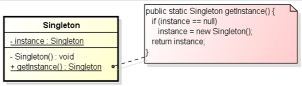
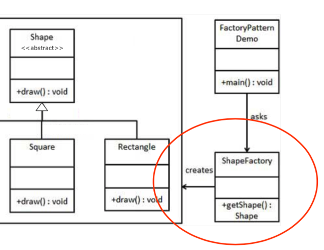
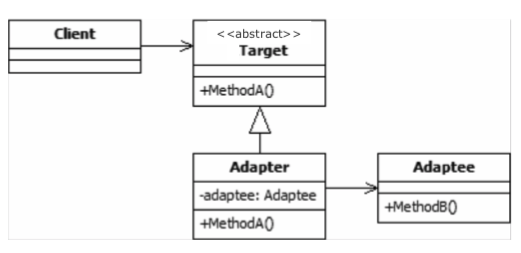
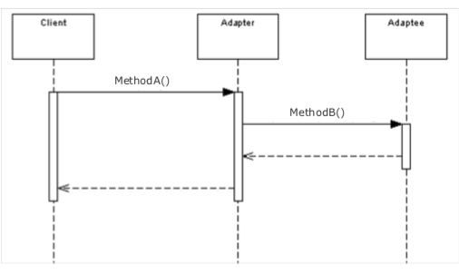
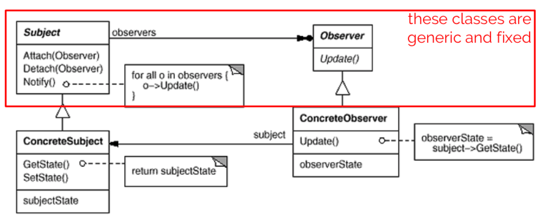
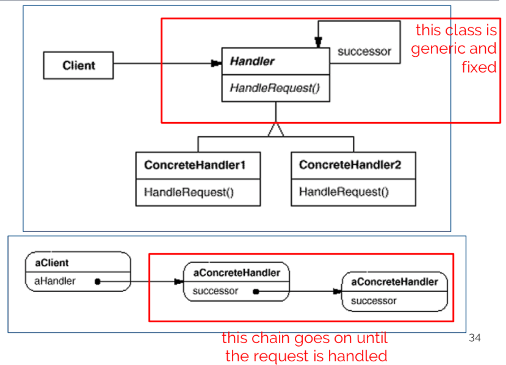

design pattern: a reusable form of solution to a common design problem (like a 'template')
not a finished design, cannot be transformed directly into source code
not prescriptive, so don't memorize them. it's important to understand when and why they're needed.
speaking of, they're not always needed. don't over-complicate shit, you'll end up with a dumpster fire that nobody can maintain.
essential parts of a design pattern
how objects can be created (maintainability, control, extensibility)
we study the singleton and factory method. then there are also abstract factory, object pool, and prototype.
| Name | Singleton |
|---|---|
| Intent |
To ensure that only one instance of a class is allowed in a system. Controlled access to a single object is needed |
| Solution |  |
| Consequences |
Controlled access to sole instance Reduced name space (fewer 'global' variables) permits variable number of instances |
Implementation
public class SingleObject {
// private constructor, cannot be instantiated from outside
private SingleObject(){}
// create the one single instance
private static SingleObject instance = new SingleObject();
// get the only instance
public static SingleObject getInstance() {
return instance;
}
public void showMessage() {
System.out.println("Hello world!");
}
| Name | Factory method |
|---|---|
| Intent |
to abstract process of object creation so that type of created object can be determined at run time to make design more customizable in terms of which objects can be created avoiding the new operator because you don't want to hard code the class to be instantiated
|
| Solution |  |
| Consequences |
end up with dedicated class to create instances of objects can pass arguments to the class to control the features of the objects |
Implementation
public class ShapeFactory {
public Shape getShape(String shapeTYpe) {
if (shapeType == null) {
return null;
}
if (shapeType.equalsIgnoreCase("CIRCLE")) {
return new Circle();
}
else if (shapeType.equalsIgnoreCase("RECTANGLE")) {
return new Rectangle();
}
else if (shapeType.equalsIgnoreCase("SQUARE")) {
return new Square();
}
return null;
}
}
how to form larger structures (management of complexity, efficiency)
adapter is studied in this course. also have proxy, bridge, decorator, facade, flyweight, composite, private class data.
| Name | Adapter |
|---|---|
| Intent |
to convert interface of class into another interface to let two or more classes with incompatible interfaces work together to wrap an existing class with a new one to have a kinda homogeneous interface that masks diversity of some set of various objects |
| Solution |   |
| Consequences | single class is responsible to join functionalities of independent/incompatible classes |
Implementation
public class Wrapper {
// the wrapped object
private LegacyComponent legacyComponent;
// constructor
public Wrapper (LegacyComponent instance) {
this.legacyComponent = instance;
}
// call to wrapped method
public int doThis() {
int result = 0;
float value = this.legacyComponent.doThat();
// magic the value into an integer somehow, then
return result;
}
}
how responsibilities can be assigned to objects (objects decoupling, flexibility, better communication)
we study observer and chain of responsibility. there are also command, interpreter, iterator, mediator, memento, null object, state, strategy, template method, and visitor.
| Name | Observer |
|---|---|
| Intent |
to let some object(s) be notified of state changes in other objects in the system when on object changes state, all dependents are notified and updated automatically |
| Solution |  |
| Consequences |
supports broadcast communication state changes in object(s) should trigger behavior in other objects you can reuse objects without reusing their observers and v-v. you can remove observers without changing the subjects |
Implementation
public abstract class Observer {
protected Subject subject;
public abstract void update();
}
class MappingRover extends Observer {
// specify observed subject in constructor
public MappingRover(Subject subject) P
this.subject = subject;
subject.attach(this);
}
// observers "pull" information
public void update() {
if (this.subject.getState() == 0) {
// map the environment
}
else {
// "come back home", whatever that means
}
}
}
public abstract class Subject {
private List<Observer> observers = new ArrayList<Observer>();
private int state;
public int getState() { ... }
public void setState(int state) { ... } // and notify all observers
public void attach(Observer observer) { ... } // add to observers list
public void detach(Observer observer) { ... } //remove from observers list
public void notifyAllObservers() { ... } // run the update function for each observer in list
}
public static void main(String[] args) {
CentralStation cs = new CentralStation();
cs.setState(0);
MappingRover rover1 = new MappingRover(cs);
CameraRover rover2 = new CameraRover(cs);
CameraRover rover3 = new CameraRover(cs);
cs.setState(1);
}
| Name | Chain of responsibility |
|---|---|
| Intent |
avoid coupling sender of request to receiver by giving more than one object a chance to handle request chain receiving objects and pass request along chain until an object handles it (sequential) |
| Solution |  |
| Consequences |
Reduced coupling between objects (every object needs to know its successor) handler(s) are not known a priori and a request might be unhandled you can change responsibilities by changing chain at runtime |
Implementation
public class Task {
private Coordinate coords;
private RequestEnum request;
// basic getters and setters
public Coordinate getcoords() { ... }
public setCoords(Coordinate coords) { ... }
public RequestEnum getRequest() { ... }
public setRequest(RequestEnum request) { ... }
}
public enum RequestEnum {
PICTURE, MAP;
}
public class Coordinate {
private float lat, lon;
// basic getters and setters
public float getLat() { ... };
public setLat(float lat) { ... };
public float getLon() { ... };
public setLon(float lon) { ... };
}
public abstract class TaskHandler {
TaskHandler successor;
publicc void setSuccessor(TaskHandler successor) {
this.successor = successor;
}
public abstract void handleRequest(Task task);
}
public class CameraRover extends TaskHandler {
public void handleRequest(Task task) {
if (task.request == RequestEnum.PICTURE) {
// take a picture
}
else {
// pass on to successor
if (successor != null) {
successor.handleRequest(request);
}
}
}
}
public class Main {
public static TaskHandler setUpChain() {
MapRover mapper = new MapRover();
CameraRover photographer1 = new CameraRover();
CameraRover photographer2 = new CameraRover();
CameraRover photographer3 = new CameraRover();
return mapper;
}
public static void main(Striing[] args) {
TaskHandler chain = setUpChain;
chain.handleRequest(...);
}
}